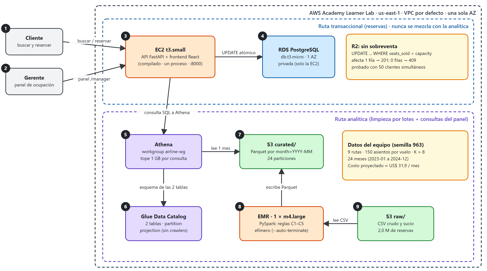

| Integrantes | Jefferson Gutiérrez Tovar Ángel Santiago Díaz Rueda |
| Semilla del equipo | 963 |
| Plataforma | AWS Academy Learner Lab (región us-east-1) |
| Repositorio | github.com/asantiagodiaz/BD_parcial1, carpeta parcial2/ |
En el primer parcial diseñamos el sistema de reservas de una aerolínea regional y construimos su backend. En este segundo parcial el sistema tiene que funcionar de principio a fin y, además, tiene que poder medirse. La gerencia de la aerolínea quiere responder dos preguntas: ¿qué rutas llenan sus aviones? y ¿cómo le fue a una ruta concreta en un mes concreto? Para eso la aerolínea tiene dos años de historial de reservas, unos 2 millones de filas, que llegan como archivos CSV y están sucios: las rutas están escritas de varias maneras, los estados no son consistentes, hay filas repetidas y hay precios inválidos.
Nuestra solución tiene dos partes que no se mezclan. La primera es la parte que ven los clientes: una API y una página web donde se buscan vuelos y se reservan asientos, con una base de datos que garantiza que nunca se vendan más asientos de los que tiene un avión. La segunda es la parte analítica: un proceso por lotes limpia el historial con Apache Spark en Amazon EMR, guarda el resultado en S3 en formato Parquet, y el panel de la gerencia lo consulta con Amazon Athena. Todo lo desplegamos en AWS Academy Learner Lab, cuidando que la arquitectura fuera lo más simple y barata posible, porque el enunciado premia eso.
Este documento explica qué construimos, por qué tomamos cada decisión y qué evidencia tenemos de que funciona. Escribimos el texto pensando en alguien que no vio el desarrollo, y al final dejamos un glosario con los términos técnicos.
La gran diferencia con el primer parcial es que ahora cada requisito se puede verificar con una prueba automática. El profesor nos entregó un conjunto de pruebas, llamado harness, que se ejecuta contra nuestro sistema ya desplegado y dice, requisito por requisito, si se cumple o no. No hay puntos por describir algo que no funciona. Cada prueba mide algo concreto:
| Req. | Qué exige | Cómo lo mide el harness | Pts |
|---|---|---|---|
| R1 | La búsqueda de vuelos responde rápido | 100 peticiones con 20 clientes a la vez; el percentil 95 de la latencia debe ser de 1 s o menos | 4 |
| R2 | Nunca se vende un asiento de más | 50 clientes reservan a la vez el último asiento; exactamente uno debe recibir 201 y los demás 409. Se repite con K asientos (en nuestro caso 8) | 10 |
| R3 | Se puede consultar una reserva | Crea una reserva, la lee y pide una que no existe (404) | 3 |
| R4 | Un trabajo de EMR limpia los datos y escribe Parquet por mes | Busca una corrida de EMR completada, los 24 prefijos month= y compara filas e ingresos con los valores esperados | 8 |
| R5 | Las dos tablas existen en Glue con las columnas exactas | Lee la definición de las tablas desde la API de Glue | 6 |
| R6 | Athena da el top-10 de rutas correcto y no escanea todo | Ejecuta su propio SQL y mide los bytes escaneados de una consulta de un mes | 8 |
| R7 | El endpoint de ocupación lee de Athena | Consulta 5 pares (ruta, mes) y revisa que Athena haya recibido consultas | 8 |
| R8 | En la web se busca, se reserva y se ve la confirmación | Maneja un navegador real con Playwright usando identificadores fijos en la página | 6 |
| R9 | El panel muestra el mismo valor que el endpoint | Carga el panel para una ruta y un mes y compara el porcentaje | 4 |
| R10 | No queda nada de EMR encendido | Revisa que no haya clusters activos y que las horas de EMR no pasen de 150 | 5 |
| R11 | La arquitectura es simple y barata | Lista los recursos: solo instancias pequeñas, sin Multi-AZ ni NAT, máximo 8 servicios facturables | 4 |
| R12 | La proyección de costos es razonable y coherente | Suma nuestro cost_projection.yaml y lo compara con el costo estimado de lo desplegado | 4 |
Estos 70 puntos son el 70 % de la nota. El resto es este documento (15 %) y la defensa oral (15 %).
La semilla. Cada equipo recibe una semilla, un número que decide cuáles son sus datos y cuáles son las respuestas correctas. La nuestra es 963 (los tres últimos dígitos de una cédula del equipo). A partir de ella se calculan, siempre igual, estos datos:
| Dato | Valor | Para qué sirve |
|---|---|---|
| Rutas | 9: CUC-BGA, CTG-BOG, CUC-SMR, ADZ-CTG, PSO-SMR, SMR-BAQ, ADZ-BAQ, PSO-CUC, BGA-BOG | Son las únicas rutas que existen en nuestro historial |
| Capacidad por vuelo | 150 asientos | Es el denominador de la ocupación |
| K | 8 | Número de asientos de la prueba de concurrencia de R2 |
| Período | 24 meses, de 2023-01 a 2024-12 | Son las 24 particiones que debe tener la tabla |
| Ocupación media y cancelaciones | ≈ 79 % y ≈ 12,5 % | Forma general del historial |
La figura 1 muestra lo que realmente quedó desplegado. Lo importante es que hay dos caminos separados: el de las reservas y el del análisis.

docs/diagrams/06-arquitectura-aws-parcial2.drawio.| N.º | Elemento | Qué es |
|---|---|---|
| 1 | Cliente | Persona que busca un vuelo y lo reserva desde el navegador, en la página principal (/). |
| 2 | Gerente | Persona de la aerolínea que consulta la ocupación por ruta y mes en el panel (/manager): ve el porcentaje y el ranking de las 9 rutas. |
| 3 | EC2 t3.small | Máquina virtual que ejecuta la API (FastAPI) y entrega el frontend React ya compilado. Es un solo proceso en el puerto 8000 y no necesita Node. |
| 4 | RDS PostgreSQL | Base de datos de vuelos y reservas. Es privada: solo la EC2 se conecta. Un UPDATE condicional impide vender un asiento de más. |
| 5 | Athena | Ejecuta SQL directamente sobre los archivos de S3, sin servidor propio. El panel le pregunta la ocupación; cobra solo por los datos que lee. |
| 6 | Glue Data Catalog | Guarda cómo son las 2 tablas (columnas y carpeta de S3) para que Athena las entienda. Con partition projection conoce los 24 meses sin crawlers. |
| 7 | S3 curated | Datos ya limpios en Parquet, una carpeta por mes (month=2024-01...). Una consulta de un mes solo lee su carpeta, por eso escanea tan poco. |
| 8 | EMR (Spark) | Cluster temporal que lee los CSV, aplica las reglas de limpieza C1–C5 y escribe el Parquet. Se apaga solo al terminar, para no seguir cobrando. |
| 9 | S3 raw | El historial tal como llega: 2 millones de reservas en CSV, con rutas mal escritas, estados raros, filas repetidas y precios inválidos. |
Un cliente abre la página, busca un vuelo y lo reserva. Esa petición llega a una máquina virtual EC2 que ejecuta un único proceso con la API (FastAPI) y que además entrega las páginas web (un frontend hecho con React, ya compilado). La API guarda y lee los datos en una base de datos PostgreSQL administrada por AWS (RDS). La base de datos no es pública: solo la EC2 puede conectarse a ella.
El historial crudo está en S3. Una vez, o cada vez que queramos actualizar el análisis, lanzamos un cluster de EMR que lee esos archivos, los limpia con Spark y escribe el resultado, ya limpio y en Parquet, de nuevo en S3. El cluster se apaga solo cuando termina. Glue guarda la descripción de las dos tablas resultantes (sus columnas y dónde están los archivos) y Athena usa esa descripción para responder consultas SQL directamente sobre los archivos de S3. Cuando la gerencia abre el panel, la API le pregunta a Athena y muestra el porcentaje de ocupación.
Los dos caminos solo se tocan en un punto: la API. Pero no comparten base de datos ni recursos de cómputo, así que analizar el historial nunca puede volver más lento el proceso de reservar.
La API sigue exactamente el contrato del enunciado (apéndice A.1):
| Endpoint | Qué hace |
|---|---|
POST /admin/flights | Crea un vuelo (id, ruta, fecha, capacidad y precio). Responde 201, o 409 si el id ya existe. La usa el harness para preparar vuelos de prueba |
GET /flights/search | Devuelve los vuelos de una ruta y una fecha que todavía tienen asientos |
POST /reservations | Reserva un asiento. Responde 201 con el código de la reserva, 409 si el vuelo está lleno o 404 si no existe |
GET /reservations/{id} | Devuelve una reserva, o 404 si no existe |
GET /analytics/occupancy | Devuelve la ocupación de una ruta en un mes, calculada con Athena |
GET /health | Responde 200 si la API está viva |
Con este contrato solo hacen falta dos tablas. flights guarda cada vuelo con su capacidad y cuántos asientos lleva vendidos (seats_sold); reservations guarda cada reserva
(id, vuelo, pasajero, clase y estado). En el primer parcial teníamos 19 tablas porque el sistema era más grande (tarifas, itinerarios con escalas, agencias, billetes). Aquí no se necesita ninguna de ellas, así que no
las usamos: menos tablas significa menos consultas por petición, menos código que mantener y menos cosas que explicar. El esquema se crea solo al arrancar la API, sin herramientas de migración, porque con dos tablas no se justifica una.
Este es el requisito que más puntos vale y el que más cuidado exige. El problema es el siguiente: si 50 personas reservan a la vez el último asiento, no podemos primero preguntar "¿queda cupo?" y después guardar la reserva, porque entre una cosa y la otra otro cliente puede haber tomado el asiento. Todos habrían visto "queda 1" y todos habrían reservado.
Lo resolvimos haciendo las dos cosas en una sola instrucción atómica de SQL:
UPDATE flights SET seats_sold = seats_sold + 1 WHERE flight_id = :id AND seats_sold < capacity
PostgreSQL bloquea la fila del vuelo mientras la modifica. Las demás peticiones esperan su turno y, cuando les toca, la condición seats_sold < capacity se vuelve a evaluar con el valor ya actualizado. Si la instrucción
modificó una fila, había cupo y se guarda la reserva en la misma transacción (respuesta 201). Si modificó cero filas, ya no quedaba cupo (respuesta 409; o 404 si el vuelo no existe). Así, con 1 asiento y 50 clientes, exactamente uno gana y 49 reciben 409.
Como segunda barrera, la tabla tiene una restricción CHECK (seats_sold <= capacity) que haría fallar a la base de datos si alguna vez algo intentara pasarse del límite.
Es el mismo bloqueo de filas que usamos en el primer parcial (SELECT ... FOR UPDATE), pero en un solo viaje a la base de datos en lugar de dos, lo que reduce la latencia cuando hay muchos clientes a la vez. Además dimensionamos el
grupo de conexiones a la base de datos (20 permanentes y hasta 40 adicionales) para que 50 reservas simultáneas no se queden esperando una conexión.
El frontend es una aplicación de una sola página hecha con React y Vite, con el mismo diseño que usamos en el primer parcial (barra azul con la marca RegionalAir, tarjetas, y modo oscuro automático). La compilamos a archivos estáticos y el mismo proceso de la API los entrega, de modo que el navegador siempre habla con un único servidor. Tiene dos pantallas:
/). Se elige origen y destino (el campo sugiere los aeropuertos del historial), se escoge la fecha y se pulsa Buscar. Cada vuelo aparece con su ruta, los asientos disponibles y el precio. Al pulsar Reservar se piden el nombre del pasajero y la clase (económica o ejecutiva),
y al confirmar se muestra una pantalla con el código de la reserva. Si el vuelo se llena mientras la persona decide, la página lo avisa con un mensaje claro en lugar de fallar./manager). Se escribe una ruta y un mes. Aparece una tarjeta grande con el porcentaje de ocupación, una barra de progreso, los asientos vendidos y la capacidad del mes. Debajo se muestra un ranking de las 9 rutas en ese mismo mes, ordenado de mayor a menor ocupación y con la ruta consultada resaltada.
Eso responde la pregunta original de la gerencia ("¿qué rutas llenan sus aviones?"), no solo la de una ruta. La tarjeta aparece apenas llega su valor; las otras 8 rutas se piden en paralelo a Athena y se agregan después, y las rutas que no tienen datos en ese mes simplemente no aparecen.Hicimos primero una versión muy simple, con HTML y JavaScript sin frameworks, que ya cumplía el contrato del harness. Después decidimos rehacerla en React retomando el diseño del parcial 1, porque se veía demasiado básica y porque queríamos que el panel contara mejor lo que mide el sistema.
No reutilizamos las pantallas del parcial 1 tal cual, porque estaban hechas para otra API (búsqueda con pasajeros y escalas, tarifas, consulta por código de seis letras); reutilizamos su estilo y su estructura y reescribimos las páginas para el contrato actual.
Los identificadores que exige el harness (data-testid) se conservaron en cada elemento.
Un detalle importante sobre la seguridad: el panel no pide usuario ni contraseña. No lo hicimos por descuido: el harness abre /manager y llama a /analytics/occupancy sin credenciales, y exigir un inicio de sesión haría fallar R7 y R9. Lo dejamos documentado como limitación (sección 11).
Antes de subir nada a AWS corrimos el backend y las pruebas del harness en nuestro propio computador, con una PostgreSQL local. Ahí pasaron R1, R2, R3 y R8 (23 puntos). Eso nos permitió corregir errores sin gastar crédito del Lab.
Con la semilla 963 generamos el historial con el programa que nos dio el profesor: 14.904 vuelos y 2.079.743 filas de reservas. Los subimos a un bucket de S3 (raw/). Los archivos son flights.csv (unos 430 KB)
y reservations.csv (unos 81 MB). Están sucios a propósito, y por eso hay que limpiarlos antes de analizarlos.
| Regla | Qué hace | Ejemplo |
|---|---|---|
| C1 | En la ruta, quita todos los espacios y pasa a mayúsculas | " bog - mde " se vuelve BOG-MDE |
| C2 | En el estado, quita espacios de los extremos y pasa a mayúsculas | "confirmed " se vuelve CONFIRMED |
| C3 | Conserva solo los estados CONFIRMED y CANCELLED | Una fila con estado PENDING se descarta |
| C4 | Descarta las filas con precio vacío o menor o igual a cero | Un precio de 0, -500 o vacío se descarta |
| C5 | Si un reservation_id aparece más de una vez, deja solo la primera | Las copias exactas se eliminan |
De las 2.079.743 filas crudas quedaron 2.009.247 filas limpias, es decir, se descartó un 3,4 % (70.496 filas: duplicados, estados desconocidos y precios inválidos). Ese número es exactamente el que el harness esperaba.
Spark es un motor que reparte un trabajo de datos entre varios procesadores para hacerlo en paralelo, y EMR es el servicio de AWS que levanta un grupo de máquinas ya configuradas con Spark. Nuestro programa (emr/job.py, en PySpark) hace lo siguiente:
month=2023-01/, month=2023-02/, ...). Son 24 carpetas con un archivo cada una.Una aclaración sobre la ocupación: las reservas canceladas no cuentan como asientos vendidos, solo las confirmadas. Y la capacidad cuenta los asientos de todos los vuelos del mes, no solo de los que vendieron algo.
Antes de usar EMR verificamos esta lógica con una muestra de 200 mil filas, primero en Spark local y luego en un cluster real de EMR. En las dos pruebas el resultado coincidió exactamente con el oráculo (la respuesta correcta que trae el harness): filas, ingresos por mes, capacidad, vendidos, cancelaciones y ocupación.
Un CSV es texto: para leer una sola columna hay que leer todo el archivo. Parquet guarda los datos por columnas y comprimidos, así que una consulta solo lee las columnas que necesita, y los archivos pesan mucho menos (80,6 MB de CSV se vuelven unos 18 MB de Parquet en total). Además, al guardar cada mes en su propia carpeta, una consulta que pregunta por un mes solo abre esa carpeta y ignora las otras 23. En la prueba de R6, una consulta de un mes escaneó 295.129 bytes, mientras que el límite permitido era de 1.601.434. Sin Parquet y sin particiones, esa misma consulta habría tenido que leer todo el historial.
Los archivos Parquet por sí solos no saben cómo se llaman sus columnas ni dónde están. Glue Data Catalog guarda esa descripción: las dos tablas, reservations_curated y route_month_metrics, con las columnas exactas del contrato. Athena es un servicio que ejecuta SQL
directamente sobre archivos de S3, sin servidor que administrar, y cobra solo por los datos que escanea.
Para que Athena conozca las 24 carpetas por mes sin tener que registrarlas una por una, usamos partition projection: en la definición de la tabla le decimos que el mes va desde 2023-01 hasta 2024-12 y que cada mes es una carpeta. Así no hace falta correr un rastreador (crawler) ni comandos de reparación, y las particiones quedan siempre al día.
Cuando alguien consulta /analytics/occupancy?route=SMR-BAQ&month=2024-01, la API lanza una consulta a Athena sobre la tabla route_month_metrics, espera el resultado y lo devuelve. El panel gerencial muestra ese valor como porcentaje con dos decimales.
Como Athena no permite parámetros en este modo, la ruta y el mes se validan con un patrón estricto antes de entrar en la consulta, para que nadie pueda inyectar SQL. Si Athena tarda más de 9 segundos, la API responde con un error en lugar de dejar la página colgada.
Para cada decisión indicamos qué elegimos, por qué, qué alternativas descartamos, a qué requisito responde y qué pilar del AWS Well-Architected la respalda.
Elegimos una sola EC2 t3.small para la API y el frontend, y una RDS PostgreSQL db.t3.micro en una sola zona de disponibilidad y sin acceso público.
Por qué: es lo más barato que cumple R1 y R2. R2 necesita bloqueo de filas, que PostgreSQL ofrece; y R1 se cumple con una máquina pequeña porque la búsqueda es una consulta con índice por ruta y fecha. Medimos un p95 de 0,228 segundos, muy por debajo del segundo permitido.
Descartamos los contenedores con balanceador de carga (el balanceador cuesta unos 16 dólares al mes y no mejora ningún requisito), Aurora y DynamoDB (más caros, o sin el bloqueo de filas que necesitamos), y poner PostgreSQL dentro de la propia EC2 (ahorraría unos 14 dólares al mes,
pero perdemos copias de seguridad administradas y aislamiento de los datos). Requisitos: R1, R2, R11. Pilares: Optimización de costos, Confiabilidad, Seguridad.
El curso exige usar EMR en este proyecto. Más allá de eso, tiene sentido: el historial viene sucio y hay que limpiarlo con reglas exactas, validarlo y agregarlo por ruta y mes. Athena sola podría escribir resultados con una consulta CTAS, pero tendríamos menos control sobre la transformación y escalaría peor si el historial se multiplicara.
Un trabajo de AWS Glue sería equivalente, pero no es lo que pide el curso. Elegimos un cluster EMR clásico (versión 7.2.0) de un solo nodo m4.large, que es el único tipo disponible en el Lab; EMR Serverless no aplica.
Cómo evitamos que quede encendido (R10): lanzamos el cluster con la opción --auto-terminate. El cluster solo tiene un paso y, cuando termina, se apaga solo. Además, EMR no está dentro del stack de CloudFormation: así no puede quedar vivo por accidente ni cobrarse mientras dormimos.
Lo medimos: una corrida dura unos 8 minutos en total (cerca de 6 minutos de arranque y 2 de trabajo), el harness contó 12 horas normalizadas contra un tope de 150, y al final no había clusters activos. Requisitos: R4, R10. Pilares: Optimización de costos, Sostenibilidad, Excelencia operativa.
Elegimos Parquet particionado por mes, con un archivo por partición, y la tabla de métricas en un solo archivo pequeño. Por qué: una consulta de un mes solo lee una de las 24 carpetas, y Parquet solo lee las columnas necesarias, así que Athena escanea una fracción del historial y cobra menos (295 KB en la prueba de R6). Requisitos: R5, R6. Pilares: Optimización de costos, Eficiencia de rendimiento, Sostenibilidad.
El endpoint consulta Athena cada vez. Latencia: entre 1,5 y 2,5 segundos medidos, dentro del límite de 10 s. Costo por consulta: fracciones de centavo, porque cada una lee kilobytes y Athena cobra 5 dólares por terabyte escaneado. Frescura: los números son los de la última corrida de EMR; para un análisis gerencial, que mira meses completos, es suficiente. ¿Usamos caché? No lo justificamos: el volumen de consultas es bajo, el contrato exige que la primera petición de cada par consulte a Athena, y un caché solo valdría la pena con miles de consultas por día. Requisitos: R7, R9. Pilares: Eficiencia de rendimiento, Optimización de costos, Seguridad.
Las reservas viven en RDS; el historial vive en S3 y se consulta con Athena, que es un servicio sin servidor; y el procesamiento pesado corre en EMR, fuera de la EC2. Por eso el análisis no consume conexiones ni procesador de la base de reservas. Dentro de la API, además, la reserva es una sola instrucción atómica y el grupo de conexiones está dimensionado para 50 clientes simultáneos. Requisitos: R1, R2. Pilares: Confiabilidad, Eficiencia de rendimiento.
| Servicio | Alternativa que consideramos | Requisito | Pilar(es) |
|---|---|---|---|
| EC2 t3.small | Fargate con balanceador; Lambda | R1, R2, R8, R11 | Optimización de costos, Excelencia operativa |
| RDS PostgreSQL db.t3.micro, una AZ | PostgreSQL en la EC2; Aurora; DynamoDB | R2, R3, R11 | Confiabilidad, Seguridad (cifrada y no pública) |
| S3 | Disco de la máquina o HDFS del cluster | R4, R5 | Optimización de costos, Sostenibilidad |
| EMR, un nodo m4.large efímero | Trabajo de Glue; Athena CTAS | R4, R10 | Optimización de costos, Sostenibilidad |
| Glue Data Catalog, sin crawlers | Crawlers; tablas Hive propias | R5 | Excelencia operativa, Optimización de costos |
| Athena con tope de 1 GB por consulta | Una base analítica en RDS; Redshift | R6, R7 | Optimización de costos, Eficiencia de rendimiento |
Por diseño usamos seis servicios facturables (EC2, RDS, S3, EMR, Glue y Athena), por debajo del máximo de ocho. No hay NAT Gateway, ni balanceador de carga, ni Multi-AZ.
El Learner Lab tiene restricciones que condicionaron el diseño: no se pueden crear roles de IAM, el bootstrap de CDK no funciona y los recursos viven solo mientras dura la sesión. Por eso la infraestructura está escrita con AWS CDK, pero la desplegamos generando la plantilla de CloudFormation y aplicándola con la
CLI, usando los roles que el Lab ya trae (LabRole y LabInstanceProfile).
deploy.sh compila el frontend (React), empaqueta el backend y el frontend ya compilado, los sube a S3, crea una llave SSH y una contraseña aleatoria para la base de datos (que no se guarda en el repositorio), genera la plantilla con cdk synth y la aplica con aws cloudformation deploy.
Crea la EC2, la RDS, el grupo de seguridad, la base de datos y las dos tablas de Glue, y el grupo de trabajo de Athena. Después espera a que la API responda. Tarda unos 10 minutos, casi todo por la RDS. deploy.sh destroy borra todo lo anterior y deja el bucket de datos.run_emr.sh lanza el cluster de EMR, espera a que termine y muestra el resultado. Está separado del despliegue a propósito, por lo explicado en la sección 6.2.| Recurso | Configuración |
|---|---|
| EC2 | t3.small, disco cifrado de 20 GB, instala Python y arranca la API como servicio del sistema. No necesita Node: recibe el frontend ya compilado |
| RDS PostgreSQL 16 | db.t3.micro, 20 GB cifrados, una sola AZ, sin acceso público, respaldo de un día |
| Grupo de seguridad | Puerto 8000 abierto (para que el profesor pueda calificar), SSH solo desde nuestra IP, y PostgreSQL únicamente entre la EC2 y la RDS |
| Glue | Base airline_analytics y dos tablas con partition projection, sin crawlers |
| Athena | Grupo de trabajo airline-wg con un tope de 1 GB escaneado por consulta, como freno ante una consulta mal escrita |
| S3 | Bucket privado con datos crudos, datos curados, resultados de Athena, código y registros de EMR |
deploy.sh y run_emr.sh a la vez, en dos terminales.deploy.sh destroy y comprobamos que no quedara nada encendido (ni EC2, ni RDS, ni NAT, ni clusters de EMR).Supuestos. Imaginamos un uso gerencial normal: unos 50 usuarios internos, unas 2.000 búsquedas y 200 reservas al día, unas 100 consultas a Athena al día, y una corrida mensual de EMR de media hora con un nodo m4.large. El historial pesa unos 100 MB en CSV y unos 20 MB en Parquet.
| Servicio | Detalle | USD al mes |
|---|---|---|
| EC2 | 1 × t3.small, 730 horas | 15,18 |
| EBS | Disco gp3 de 20 GB de la EC2 | 1,60 |
| RDS | db.t3.micro, una AZ, 730 horas | 12,41 |
| Almacenamiento de RDS | 20 GB | 2,30 |
| S3 | Unos 2 GB (crudo, curado y resultados) | 0,10 |
| Athena | Unas 100 consultas al día, de ≈ 1 MB cada una | 0,10 |
| EMR | 1 corrida al mes, 1 × m4.large, 0,5 h (2 horas normalizadas) | 0,20 |
| Glue Data Catalog | 1 base y 2 tablas (capa gratuita) | 0,00 |
| Total proyectado | 31,89 | |
El harness estimó 27,95 dólares a partir de lo que realmente estaba desplegado. La diferencia de unos 3,9 dólares se debe a que su estimación no incluye el almacenamiento (EBS y el disco de la RDS); queda dentro de la tolerancia y, en ambos casos, muy por debajo del tope de 50 dólares del Lab. Eso sí, solo es cierto si destruimos el stack al terminar cada sesión.
¿Qué pasa con el costo si el volumen de datos o de consultas se multiplica por 10? No se multiplica por 10. La EC2 y la RDS, que son cerca del 90 % del total, son costos fijos: no crecen porque haya más historial. Con diez veces más datos, S3 pasaría de unos 0,10 a unos 1 dólar y EMR de 0,20 a entre 1 y 2 dólares (más nodos o más tiempo, una vez al mes). Con diez veces más consultas, Athena pasaría de 0,10 a unos 1 dólar, porque cada consulta sigue leyendo una sola partición. El total subiría de unos 32 a unos 36 dólares, alrededor de un 12 %. Esto se debe a dos decisiones: Parquet con particiones (menos bytes escaneados, que es optimización de costos) y no tener cómputo analítico encendido todo el tiempo (sostenibilidad: consumimos energía solo mientras corre el trabajo).
Ejecutamos el harness completo con pytest contra el sistema desplegado en AWS el 19 de octubre de 2026. Pasaron las 23 pruebas y obtuvimos 70 de 70 puntos. El informe completo que genera el harness está en parcial2/report.md.
| Req. | Descripción | Puntos | Qué medimos |
|---|---|---|---|
| R1 | Latencia de la búsqueda | 4 / 4 | 100 peticiones con 20 clientes: mediana de 0,102 s y p95 de 0,228 s (límite: 1 s) |
| R2 | Sin sobreventa | 10 / 10 | 5 rondas de 50 clientes por 1 asiento: siempre 1 respuesta 201 y 49 respuestas 409. 5 rondas con K = 8: siempre exactamente 8 respuestas 201. Nunca un error 5xx |
| R3 | Consulta de reserva | 3 / 3 | Devuelve la reserva creada y 404 para un id desconocido |
| R4 | EMR escribe Parquet | 8 / 8 | Los 24 archivos se escribieron dentro de una corrida de EMR completada; 2.009.247 filas curadas, las esperadas; ingresos de los meses de prueba exactos |
| R5 | Tablas en Glue | 6 / 6 | Columnas exactas, formato Parquet y partición month con partition projection |
| R6 | Athena: top-10 y poda | 8 / 8 | El top-10 de rutas coincide con el esperado; la consulta de un mes escaneó 295.129 bytes (límite: 1.601.434) |
| R7 | Endpoint desde Athena | 8 / 8 | 5 pares (ruta, mes) correctos en 1,5 a 2,5 s cada uno; 7 consultas a Athena registradas; 404 para datos inexistentes |
| R8 | Flujo en el navegador | 6 / 6 | Un navegador real busca, reserva y ve el código; el backend devuelve esa reserva |
| R9 | Panel igual al endpoint | 4 / 4 | SMR-BAQ en 2024-01: el panel muestra 0,8773, igual que el endpoint y que el valor esperado |
| R10 | Sin EMR encendido | 5 / 5 | 0 clusters activos; 12 horas normalizadas usadas (tope: 150) |
| R11 | Arquitectura simple y barata | 4 / 4 | Solo instancias permitidas, sin Multi-AZ ni NAT; 7 servicios facturables detectados (máximo 8) |
| R12 | Proyección de costos | 4 / 4 | Declarado: 31,89 USD; estimado de lo desplegado: 27,95 USD; ambos bajo 50 USD |
RoleCreationFunction). Nuestro stack de CloudFormation no crea ninguna. Sigue dentro del límite de ocho.bookings. El enunciado y el contrato de datos dicen que bookings cuenta solo las reservas CONFIRMED. Pero el oráculo del harness (oracle.route_month_metrics) la calcula sobre todas las reservas válidas, confirmadas y canceladas.
Ninguna prueba compara esa columna con el oráculo (solo revisa que exista), así que no afecta la nota. Seguimos lo que dice el contrato escrito (bookings = seats_sold) y lo dejamos documentado.m4.large, el proceso principal (driver) ocupó casi toda la memoria disponible y los procesos que hacen el trabajo (ejecutores) nunca llegaron a arrancar.
Después de 12 minutos con un solo contenedor lo cancelamos a mano. La solución fue fijar la memoria de forma explícita (1 GB para el driver, 3 GB y 2 núcleos para el ejecutor, sin asignación dinámica). Con eso el trabajo tarda unos 2 minutos.>, que AWS no admite. El despliegue se deshizo antes de crear la base de datos, así que no costó nada; cambiamos el texto y el segundo intento funcionó.winutils.exe) para escribir archivos locales en Windows, y preferimos no instalarlo. Por eso, en local verificamos la lógica de limpieza en memoria contra el oráculo, y la lectura y escritura en S3 la validamos directamente en EMR.tools/crear_vuelos.py) que crea vuelos de demostración a través de la API.POST /admin/flights está abierto porque el contrato del parcial lo exige para que el harness pueda crear vuelos de prueba. En un sistema real lo protegeríamos con red privada, una clave o un rol.El enunciado permite usar asistentes de IA con la condición de que podamos explicar y defender cada decisión, y pide un registro de cómo los usamos. Usamos Claude Code, un asistente de IA de Anthropic que trabaja desde la terminal y puede leer y escribir archivos y ejecutar comandos en nuestro computador. Le dimos acceso temporal a las credenciales del Lab, que caducan al terminar cada sesión. Estos son los pasos en los que lo usamos:
| Paso | Qué le pedimos | Qué hizo y qué hicimos nosotros |
|---|---|---|
| 1. Entender el punto de partida | Analizar el repositorio del parcial 1 y decirnos qué opinaba | Nos resumió el sistema, sus puntos fuertes y lo que faltaba. Con eso armamos una lista de tareas de los dos parciales |
| 2. Leer el enunciado y el harness | Explicarnos el enunciado del parcial 2, qué es un harness y de dónde sale la semilla | Nos explicó los 12 requisitos y calculó los datos derivados de la semilla 963. Nosotros obtuvimos la semilla y se la dimos |
| 3. Backend y frontend | Escribir la API del contrato y las dos páginas, probando con el harness | Escribió el código y lo probó en local (R1, R2, R3 y R8). Después le pedimos rehacer el frontend en React con el diseño del parcial 1 y agregar al panel el ranking de las 9 rutas; lo hizo y lo verificó con R8 y con respuestas de Athena simuladas |
| 4. Trabajo de EMR | Escribir el trabajo de limpieza en PySpark y comprobarlo | Escribió el programa, lo verificó contra el oráculo y detectó la inconsistencia de bookings |
| 5. Infraestructura | Definir el stack de AWS, los scripts de despliegue y el lanzador de EMR | Escribió el stack CDK y los scripts. Nosotros pusimos las credenciales del Lab y ejecutamos deploy.sh y run_emr.sh desde nuestra terminal. Juntos corregimos los dos fallos descritos en la sección 10 |
| 6. Pruebas y cierre | Correr el harness completo y revisar que no quedaran recursos encendidos | Ejecutó el harness y verificó que no hubiera recursos activos al destruir el stack. Nosotros decidimos cuándo destruir y qué subir al repositorio |
| 7. Documentación | Redactar la sección 5, la proyección de costos, el diagrama y este documento | Los redactó y generó. Nosotros pedimos cambios de formato y de redacción, por ejemplo escribirlo en primera persona |
Este apéndice es un resumen por pasos y no una transcripción. Si hace falta el texto exacto de cada instrucción, está en el historial de la conversación con el asistente, que podemos entregar.
| Término | Qué significa |
|---|---|
| API | Programa que recibe peticiones por internet (buscar un vuelo, reservar) y responde con datos |
| Athena | Servicio de AWS que ejecuta SQL directamente sobre archivos guardados en S3 y cobra por los datos que lee |
| CDK / CloudFormation | Herramientas para describir en código los recursos de AWS (máquinas, bases de datos) y crearlos o borrarlos de una vez |
| CSV | Archivo de texto con una fila por registro y las columnas separadas por comas |
| EC2 | Máquina virtual en AWS |
| EMR | Servicio de AWS que levanta un grupo de máquinas con Spark para procesar datos grandes |
| Glue Data Catalog | Directorio de AWS donde se registra cómo son las tablas (columnas y ubicación de los archivos) |
| Harness | Conjunto de pruebas automáticas con las que el profesor califica el sistema desplegado |
| React / Vite | React es una biblioteca de JavaScript para construir páginas web con componentes; Vite es la herramienta que compila ese código a archivos estáticos que cualquier servidor puede entregar |
| Parquet | Formato de archivo por columnas y comprimido, pensado para análisis de datos |
| Partición | Dividir los datos en carpetas (aquí, una por mes) para leer solo la que se necesita |
| Partition projection | Truco de Athena para conocer las particiones por una regla (meses de 2023-01 a 2024-12) sin registrarlas una por una |
| p95 | El valor bajo el cual está el 95 % de las mediciones; "p95 de 0,228 s" significa que el 95 % de las búsquedas tardó 0,228 s o menos |
| RDS | Base de datos administrada por AWS (aquí PostgreSQL) |
| S3 | Servicio de AWS para guardar archivos |
| Sobreventa | Vender más asientos de los que tiene el avión |
| Spark / PySpark | Motor para procesar grandes cantidades de datos repartiendo el trabajo; PySpark es su versión para Python |